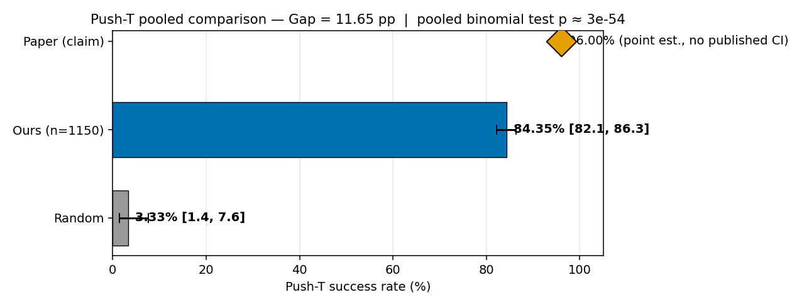
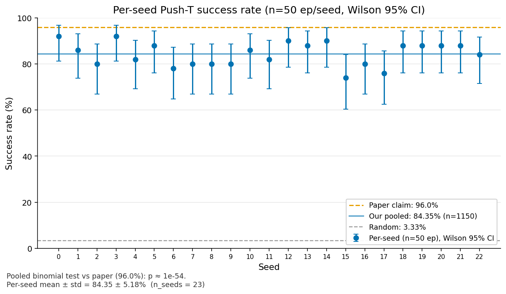
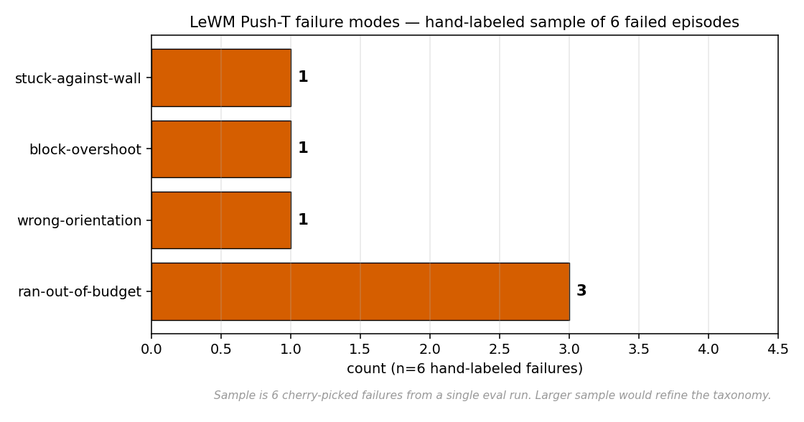
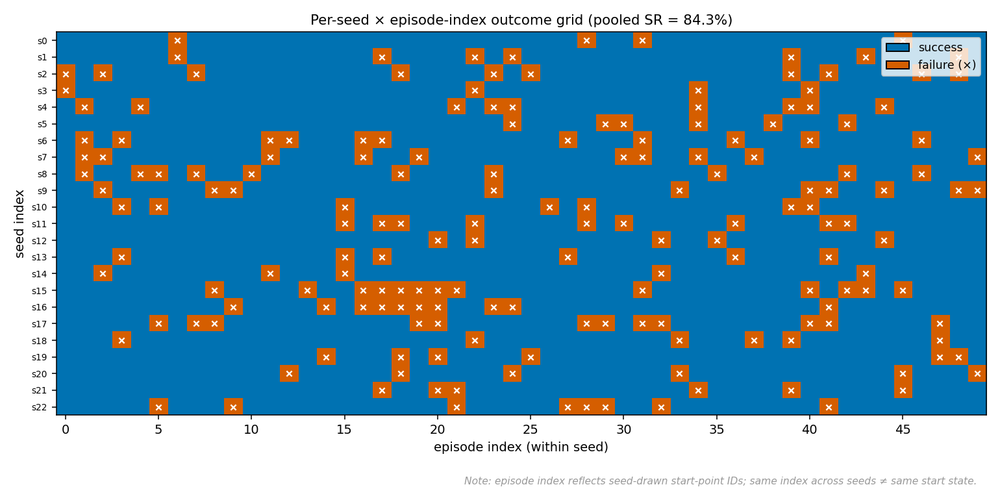

Results & Limits: the 11.65 pp gap, framed honestly
TL;DR. Across 23 seeds × 50 episodes = 1,150 pooled Push-T evaluations, our replication of LeWorldModel reaches 84.35% ± 5.18% success — an 81-point lift over the 3.33% random baseline, but 11.65 percentage points below the paper's reported 96.0 ± 2.83. The pooled binomial test against the paper's claim returns p ≈ 3 × 10−54. This is not sampling noise.
We do not claim the paper is wrong, and we do not claim we reproduced it. Under our documented eval config and the released weights, we get 84.35%. We do not yet know why we do not get 96.0%. Three candidate explanations follow; we rank none above the others.
Pooled comparison — ours, paper, random
Pooled success on Push-T is 970 / 1150 = 84.35% (Wilson 95% CI 82.13–86.33). The paper's 96.0% is a point estimate with no released CI; the random-action baseline pools to 5 / 150 = 3.33%. The one-sided binomial test of our pool against the paper's null gives p ≈ 3 × 10−54.


Cross-task comparison
Our second task evaluated independently is TwoRoom (navigation): 3 seeds × 50 episodes, pooled 134 / 150 = 89.33% (Wilson 83.38–93.33, std 5.03 across seeds). The original paper publishes only a bar chart for TwoRoom — no precise reference value — so we cannot compute a paper-vs-ours gap for it.

The 11.65 pp gap — three hypotheses
We rank none of these above the others. We have no controlled comparison to discriminate among them. Each is consistent with what we observed; none has been falsified by our current data.
-
H1: undocumented eval-config differences. The paper does not fully specify
the evaluation harness. Candidate knobs that could shift pooled success by >10 pp include
goal_offset_steps, the success-overlap threshold ε, the episode-pool subset (which subset of the ~1.87M expert-trajectory points seeds draw from), the max-episode-steps budget, and the rendering / resize pipeline that produces the 224×224 observation. Any one of these, set differently from the paper's internal value, could explain the gap without anything else changing. - H2: released weights ≠ paper-final. The publicly released HuggingFace checkpoint may be an earlier-stage, ablation-stage, or differently-seeded model than the one that produced the paper's headline 96.0%. We have no released training log to verify this, and the paper does not commit to a checkpoint hash.
-
H3: vendor
stable-worldmodelcode drift. We run against the unreleased newerswmvia ourvendor/copy. Subtle behavior changes between the version the paper used and the version we use — planner inner loops, latent normalization, batched-rollout numerics — would propagate directly into pooled success without showing up as a crash or a visible regression on individual episodes.
All three hypotheses share the property that they would not be visible without a controlled re-run. None of them imply "the model is broken" (the 81-pp lift over random rules that out); none imply "the paper is wrong" (the paper's number could be the true ceiling under its own config). The honest position is: under documented config and released weights, we get 84.35%. We do not know why we do not get 96.0%.
A subtler caveat — the world model itself
A separate observation, orthogonal to the three hypotheses above, comes from inspecting the released predictor directly. At the planner's working horizon (k=5 in latent space), the predictor's MSE (0.953) is only 8.2% lower than the trivial predict-last baseline (1.038). Most of the lift toward our 84% success rate appears to come from the planner, not the predictor's raw accuracy. This suggests the released weights may carry a weaker predictor than the paper trained with — which would also be consistent with H2 above.
Full curve, baselines, and methodology on the World Model page.
Variance is what binomial sampling predicts
Our seed-to-seed std (5.18 pp) almost exactly matches the binomial-sampling expectation for n=50 at p=0.84: √(0.84·0.16/50) ≈ 0.052 = 5.2 pp. In other words, the spread across our 23 seeds is what you would see if the only source of variation were drawing 50 episodes from a stationary success distribution.
The paper's reported std (2.83 pp) is roughly half of that. Three readings, none of which we can adjudicate from the released artifacts: either the paper evaluated >100 episodes per seed (driving binomial std down by √2), or its episode draw was deterministic across seeds (collapsing one variance component), or its number is smoothed across many more seeds than reported. This itself is reproducibility-relevant: the variance gap is independent of the mean gap.
Failure-mode taxonomy (illustrative)

Per-seed × episode outcome grid

Method limits — what LeWM doesn't do
Independent of the paper-vs-ours gap, the method itself has intrinsic limits that anyone reading this site should know before adopting it:
- No language conditioning. Goals are images only; there is no text-goal interface.
- Single-task. Each checkpoint is trained for one task; no multi-task adaptation, no in-context task switching.
- Short open-loop horizon. The latent predictor degrades fast; useful open-loop horizon is under roughly 8 steps before predict-last identity is competitive.
- Sampling-based planner is compute-heavy. ~60 s per episode on an RTX 4080 for Push-T, dominated by 300-sample × 30-iteration CEM rollouts in latent space. Not a real-time policy.
- Two tasks only. We evaluated Push-T and TwoRoom — both 2D toy domains. Nothing here demonstrates real-world manipulation capability, generality, or transfer.
What would close the gap
Each item below would isolate one of the three hypotheses. None of them require new modeling work — they are reproducibility tasks.
- Reproduce with the original eval code. Would isolate H1 by holding eval config fixed against the paper's internal harness.
- Compare HuggingFace weights to a re-trained checkpoint. Would isolate H2 by separating "released weights" from "this architecture trained on this data."
- Re-run with the published
stable-worldmodelversion, not our vendor copy. Would isolate H3 by holding the inference codebase fixed.
A combined ablation across all three would be required to attribute the gap, since the hypotheses are not mutually exclusive.
Reproducibility — raw artifact paths
Every number on this page is derived from the files below. They are checked in alongside
the site under outputs/ in the leworldmodel tree.
- 23 Push-T seeds (50 episodes each):
outputs/faithful/pusht/seed{0..22}/result.json - 3 TwoRoom seeds (50 episodes each):
outputs/faithful/tworoom/seed{0,1,2}/result.json - 3 random-policy Push-T seeds (50 episodes each):
outputs/faithful/pusht_random/seed{0,1,2}/result.json - Aggregated master data (every number on this site):
outputs/demo/data/site_data.json, schema_version 1, generated 2026-05-26.
Pooled Push-T: 970 successes / 1150 episodes. Pooled TwoRoom: 134 / 150. Pooled random
Push-T: 5 / 150. Wilson 95% CIs and binomial test computed in
tools/t2h_aggregate.py; no smoothing, no seed exclusion.